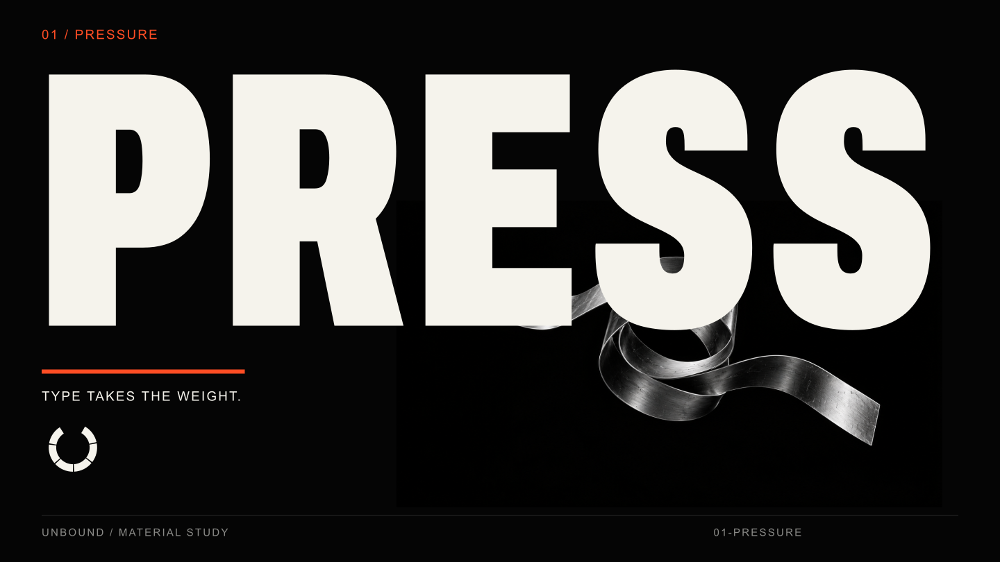
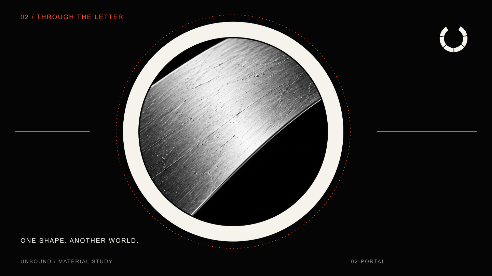
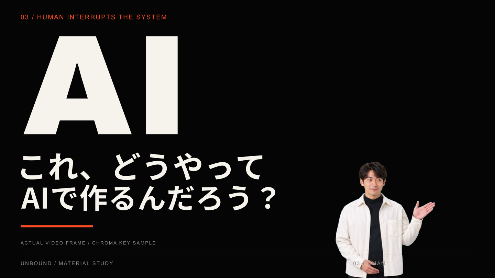
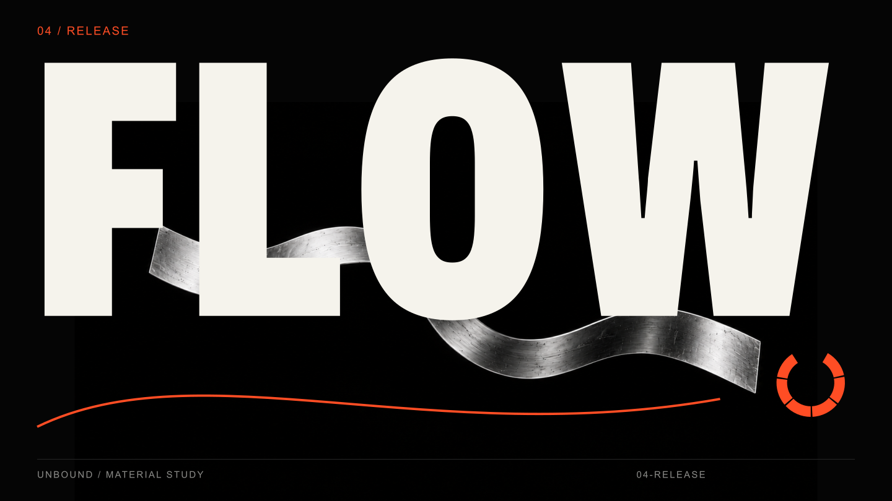
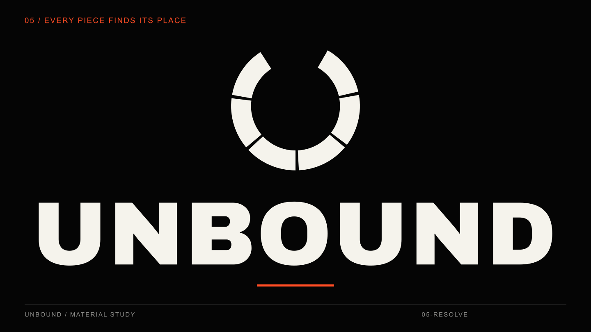

75 SECONDS / TYPE + MATERIAL + HUMAN / 2026.10.04
UNBOUND
文字に力が宿る。圧縮、連鎖、解放を、一つの形でつなぐための制作素材。人物の実写的な動きだけをSeedanceへ、文字・ロゴ・空間の演出をRemotionへ。
人物動画を受領し、背景を透過した動画も作成済みです。原本は854×480・約8秒。人物を大きく拡大しすぎない配置で使います。透過人物PNGは別途作成した仮編集用の静止画です。
完成映像 — 75秒
画面構成のサンプル
以下は静止画の構図見本です。人物の構図には受領した動画の切り抜きフレームを使用しています。完成動画ではありません。

01-pressure
02-portal
03-human
04-release
05-resolve人物の動画素材
画像素材
音とタイミング
128 BPM・75秒のオリジナル編集ガイド。音楽の完成版ではなく、衝突や場面転換のタイミングを揃えるためのリズムです。人物の台詞は含みません。